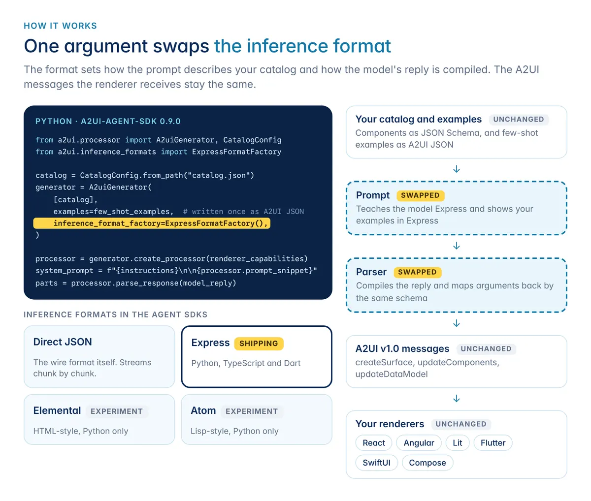
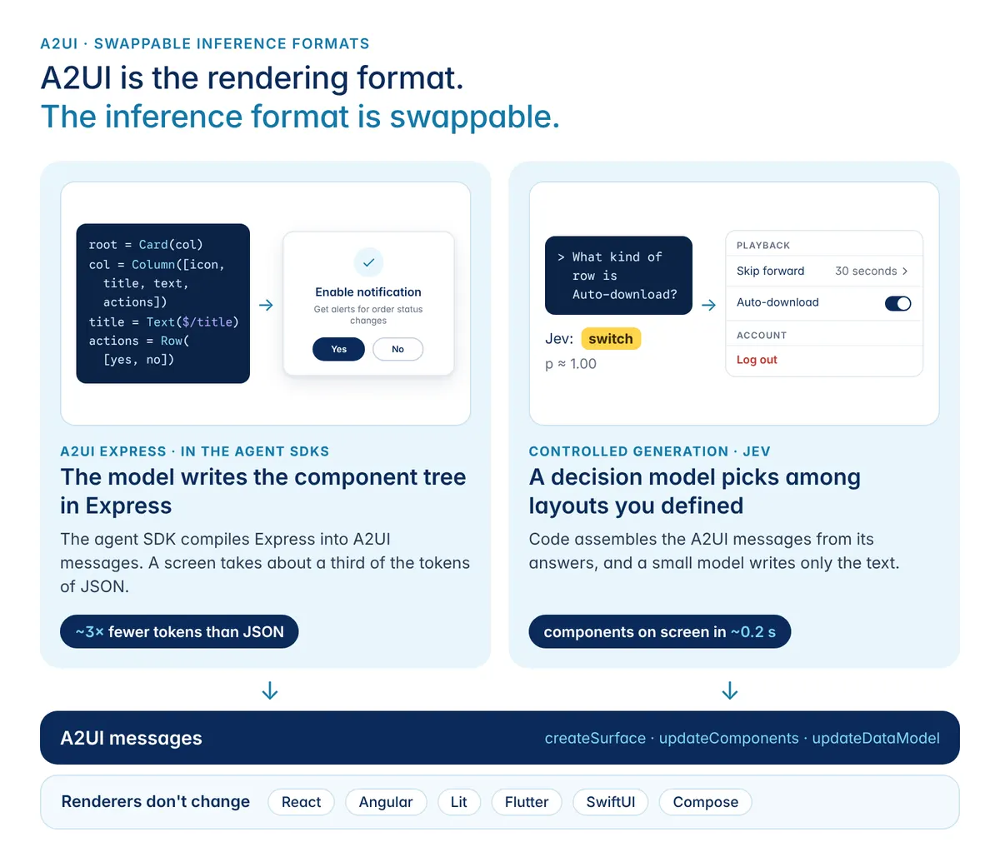

生成式 UI 不再逐字吐 JSON：把「設計介面」與「編譯介面」拆開
導讀原文：Fast, reliable A2UI, with swappable inference formats（A2UI Express 與決策模型整合的發布說明）
30 秒版本
A2UI 是給 agent 用的生成式 UI 協定：客戶端用一份 catalog 宣告可用元件當契約，agent 送出描述介面的訊息，渲染器負責畫出來。問題是——一開始 agent 直接吐 A2UI 的 JSON 傳輸訊息，「每個大括號、每層巢狀」都要模型自己生，又慢又容易錯。這次發佈把「模型產生什麼格式」變成可替換的 inference_format：新的 A2UI Express 用一行一語句的類 Python 語法，由 Agent SDK 的確定性編譯器轉成標準 A2UI JSON，同類畫面最多省 3 倍 token、延遲最多降 3 倍；若畫面形狀固定，改叫 Jev 這類 System One 決策模型挑版面，延遲最多可降 80 倍。
- 慢的根源不是模型笨，是逼 LLM 逐字生成受複雜 schema 約束的 JSON 樹。
- Express 只寫「元件與參數」，編譯、驗證交給 SDK——錯的語法進不了畫面。
- 兩種螢幕兩種工具：需要設計的用 Express，形狀固定的用決策模型選預先定義的版面。
問題：把「UI 設計」壓進 JSON 語法裡
A2UI 的設計本來很乾淨：catalog 是契約（客戶端廣告一組受信任的元件），agent 只送出「用這些元件組成的介面」訊息，渲染器負責畫。但初版讓 agent 直接生成 A2UI 的 JSON 傳輸訊息，等於要模型一邊想版面、一邊處理 schema 的每個細節。
原文的觀察很直白：「generating JSON trees constrained by a complex JSON schema is slow and error-prone for LLMs」。更麻煩的是副作用——這樣做把 A2UI 綁死在「輸出文字的 LLM」上，難以接上更快的 System One 決策模型（那些模型不吐文字，只做結構化決策）。
解法：把推論格式變成一個可替換的參數
新機制的關鍵在於承認「模型輸出什麼」和「協定長什麼樣」是兩件事。SDK 從你 catalog 的 JSON schema 自動生成兩樣東西：一段教模型該格式語法的 prompt，以及一個把模型回覆編譯成驗證後 A2UI 訊息的編譯器。因為兩者都源自同一份 schema，格式不可能描述 catalog 裡沒有的元件或屬性。

建立 generator 時傳一個參數
在 Python SDK 傳 inference_format_factory=ExpressFormatFactory()；TypeScript 則把 new ExpressFormatFactory() 當 generator 的第三個參數。SDK 會把對應的 prompt 片段接進 system prompt。
一行一個元件，變數名就是元件 ID
參數按 catalog schema 宣告的順序定位（_ 代表跳過一格），$/title 綁資料模型，Event("accept") 宣告伺服器動作。例如通知卡片的 yes_btn=Button(yes_btn_text, _, Event("accept", {}))。
確定性程式碼接手
processor.parse_response() 回傳文字片段加上「已驗證的 A2UI 訊息」。Python 與 TypeScript SDK 可對 Direct JSON 逐塊串流，Express 則是收完整回覆後一次編譯。
形狀固定的畫面交給決策模型
設定頁、結帳頁、確認頁這類「形狀已知」的畫面，模型不需要設計版面，只需在你預先定義的版式中挑一個——這正是 Jev（TypeSafe）這類 System One 模型的長處：不生成文字或 JSON，你送狀態與一組有型別的問句，它逐題作答。

可用版本：Python agent SDK a2ui-agent-sdk 0.9.0（PyPI）、TypeScript @a2ui/agent（npm）、Dart a2ui_agent 0.0.1-wip004（pub.dev）。Python SDK 另支援 macros：畫面要顯示系統既有的資料時，模型只寫 OrderStatus("ord_42")，由 macro 去撈訂單並填值，畫面上每個值都直接來自你的資料源。
評測怎麼做的：同一份題目、四種格式、開關思考
原文說得一絲不苟：因為客戶回饋集中在 Direct JSON 生成的延遲與正確性，團隊設計了四種候選推論格式，全部跑同一份 51 題評測（模型是 gemini-3.5-flash），並且分別比較「思考模式開啟」與「關閉」。結論之一是——Express 就算關掉思考也能有一樣好的表現，這在實務上等於直接換到最快的推論時間。
數字部分要留意限定語：「最多」3 倍的延遲改善與「最多」3 倍的 token 節省都是相對 Direct JSON 的上限值；「最多 80 倍」則不是 Express 單獨達成的，而是改用 Jev 這類決策模型做版面決策時的降幅。把這兩件事混為一談，就會誤以為換個格式就能快 80 倍。
帶走三件事
瓶頸是「讓 LLM 寫 schema 的語法」，不是生成式 UI 本身。把模型輸出換成貼近 Python 風格的中介格式（一行一語句、位置參數），再用確定性編譯器補回嚴格結構，這個拆法同時買到速度與正確性——錯誤的語法根本進不了渲染層。
「可替換的推論格式」是一種架構承諾。inference_format 一旦是參數，就能按畫面選引擎：需要設計的走 Express，形狀固定的走決策模型；同一個 A2UI 協定、同一個 catalog、同一個渲染器。這種分層比任何單一模型的最佳化都長壽。
看到倍數先找基準與主詞。「3 倍」是相對 Direct JSON、「80 倍」是改用 Jev 這類決策模型做版面決策時的降幅（也不是 Express 單獨達成）、「51 題／gemini-3.5-flash」是評測規模。要在自己的產品引用這些數字，就得連限定語一起搬。
同一主題的其他館藏
導讀為本站編輯內容（AI 摘解自官方原文與館藏重點，非官方文件）；引述數據出自原文，示意圖與小標為編輯整理。內容經對照原文的獨立事實審查後發布。